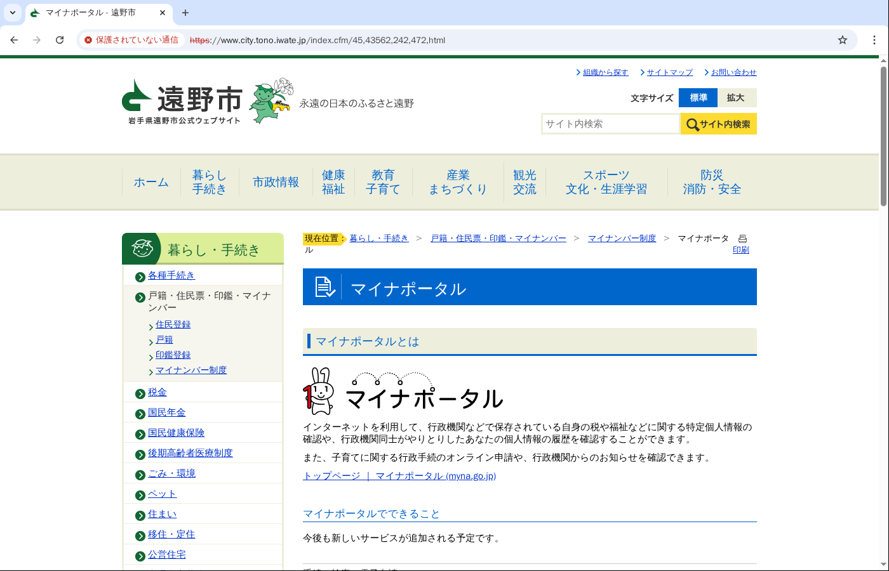
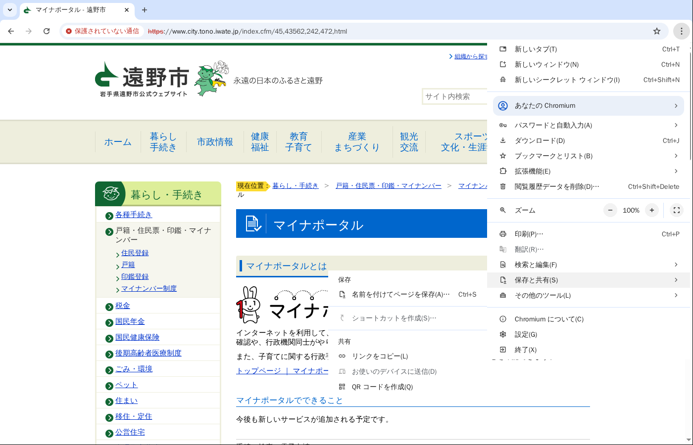
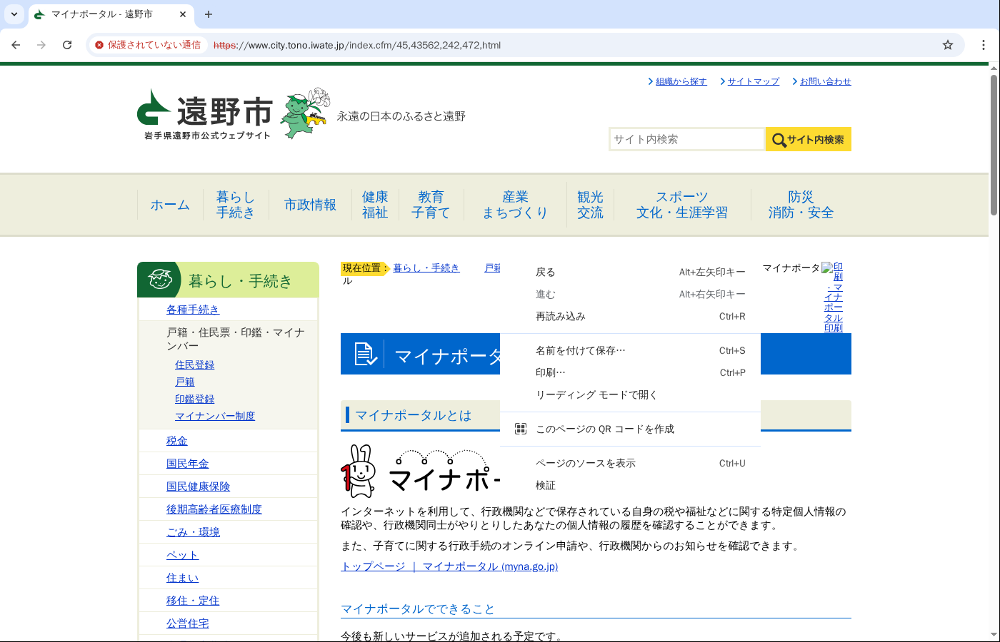
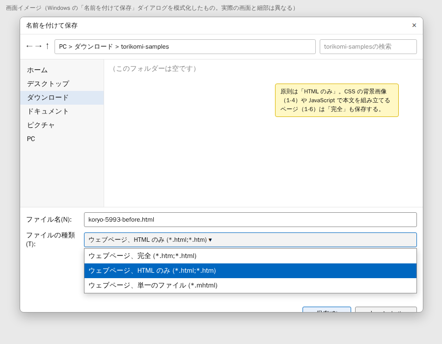
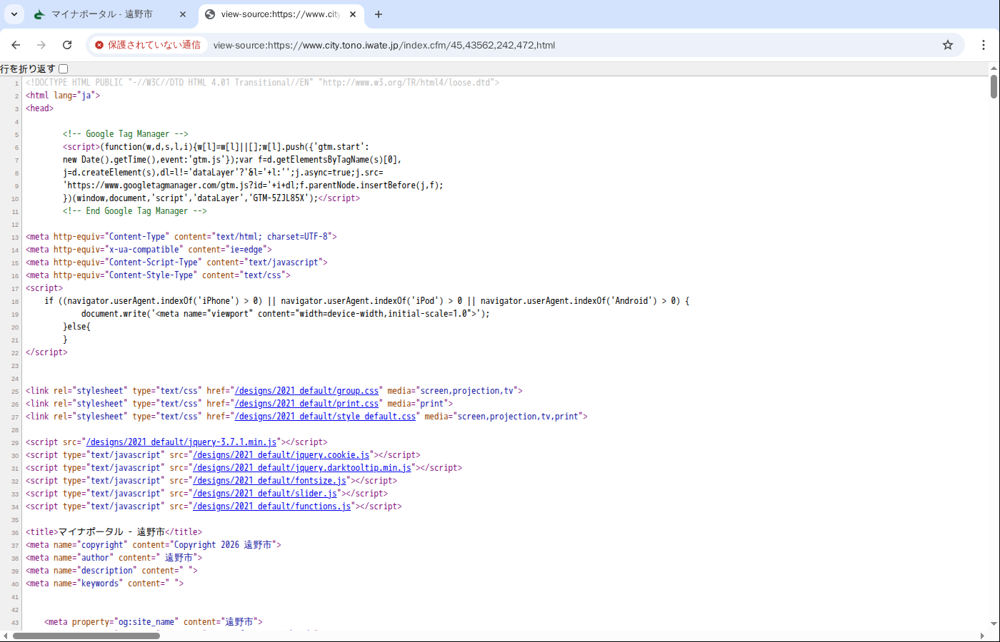
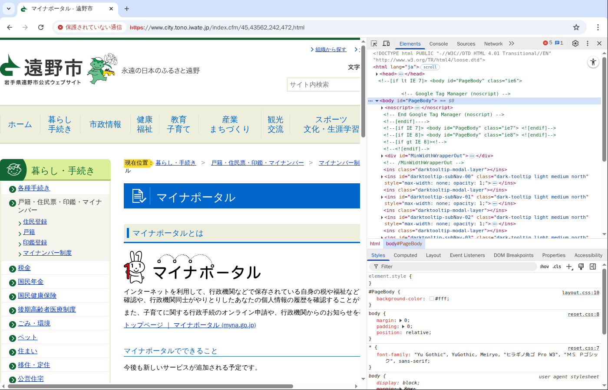
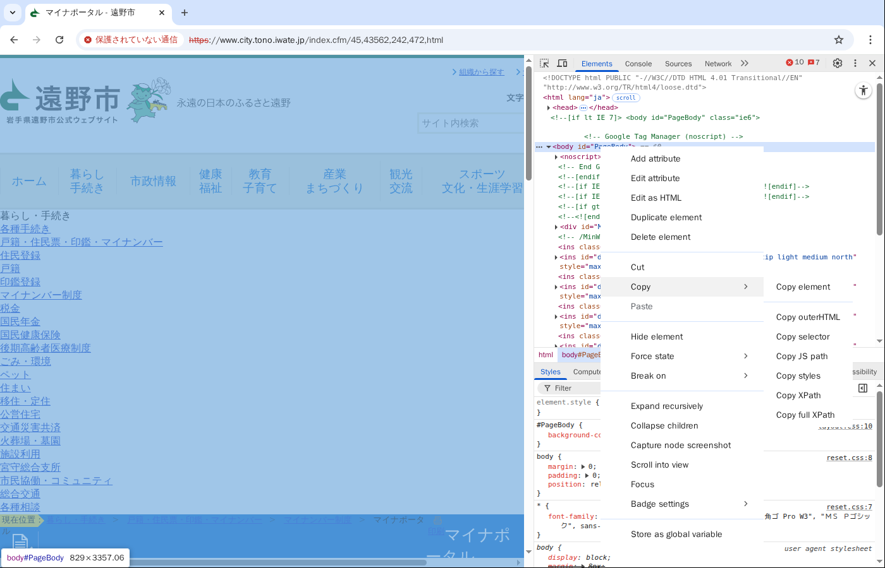

取込パターンの再現用に、元ページと取込後ページの HTML を手元に残すための手順書。作成日 2026-09-18。Windows の Google Chrome を前提にしている。
memory/cms-migration-import-failure-patterns.md の各項目を再現するための HTML を、ページが消える前に手元へ残す。対象は2種類ある。
migrate.smart-lgov.jp など。ログインが要る）。図は Linux の Chromium で撮ったため、メニューの並びは同じだが細部が異なる。アドレスバーに「保護されていない通信」と出ているのは撮影環境の都合で、実際は鍵マークになる。DevTools の表記が英語なのも同じ理由で、お手元の Chrome では日本語になる。
ダウンロード\torikomi-samples）。<項目番号>-<自治体>-<before|after>.html にする。例: 1-1-koryo-before.html、1-4-wake-after.html。同じページを「完全」でも保存するときは -complete を足す。「HTML のみ」で保存されるのは、Chrome がサーバーから受け取った HTML そのものである。JavaScript が動いたあとの状態ではない。CMS 取込ツールが読むのもこの形なので、原則はこちらを使う。保存したファイルを Chrome で開くと画像や CSS が外れて見えるが、それで正しい。




次の項目は、HTML だけでは足りない。
このときは方法Aに加えて、同じダイアログで「ファイルの種類」を「ウェブページ、完全」にしてもう一度保存する。「完全」は表示中の状態（JavaScript が動いたあとの DOM）を書き出し、CSS と画像を <ファイル名>_files というフォルダに保存する。背景画像を指定している CSS もこのフォルダに入る。
渡すときは .html と _files フォルダをまとめて zip にする。
Ctrl+U（または右クリック →「ページのソースを表示」）で、Chrome が受け取った HTML をそのまま見られる（図5）。保存する前に、探している形が入っているかを Ctrl+F で確かめる。
| 項目 | 探す文字列 |
|---|---|
| 1-1 リスト内のファイルリンク | <li> の中の .pdf |
| 1-2 アイコン付きファイルリンク | <a の前後の <img |
1-3 data: 形式の画像 | data:image |
| 1-5 非対応形式 | .odt、.webp |
| 1-7 不要な属性 | file_size、data-foreign-domain |
| 2-② SVG | .svg |
左上の「行を折り返す」にチェックを入れると、長い行が読みやすい。

view-source: になる。この画面で Ctrl+S を押すと、ソースをそのまま保存できる。ページ全体ではなく、本文のブロックだけが要るときに使う。取込後のページからテンプレート部分を除いて本文だけ取るときにも使える。
.html の拡張子で保存する。方法Dで取れるのは表示中の DOM である。JavaScript で書き換わったあとの形なので、方法Aの HTML と一致しないことがある。どちらを渡したかをファイル名かメモに残す。


www03.migrate4.smart-lgov.jp の torikomi_test はログイン画面へ飛ぶので、先にログインする。free-layout-area の中を取る。メモに載っている URL 13 件の一覧。「状態」は 2026-09-18 に検証環境（クラウド）から確認した結果で、ブラウザ（VPN、CMS ログイン）では開ける可能性がある。
| 項目 | ページ | URL | 状態 | 方法 | ファイル名の例 |
|---|---|---|---|---|---|
| 1-1 | 広陵町 元ページ | www.town.koryo.nara.jp/contents_detail.php?co=kak&frmId=5993 | WAF のエラーページ。要保存 | A | 1-1-koryo-before.html |
| 1-1 | 広陵町 取込後 | www01.migrate.smart-lgov.jp/torikomi/77/koryo/6822.html | 404。CMS の取込履歴 | 履歴から | 1-1-koryo-after.html |
| 1-2 | 那珂川町 元ページ | www.town.tochigi-nakagawa.lg.jp/life/kosodate_kyouiku/2025-0324-1009-105.html | 404。CMS の取込履歴があれば | 履歴から | 1-2-nakagawa-before.html |
| 1-2 | 那珂川町 取込後 | www01.migrate.smart-lgov.jp/torikomi/78/nakagawa/9319.html | 取得済み | 不要 | 1-2-nakagawa-after.html |
| 1-3 | 那珂川町 元ページ | www.town.tochigi-nakagawa.lg.jp/life/fukushi_kaigo/2020-0219-1001-25.html | 404。CMS の取込履歴があれば | 履歴から | 1-3-nakagawa-before.html |
| 1-3 | 那珂川町 取込後 | www01.migrate.smart-lgov.jp/torikomi/78/nakagawa/9313.html | 取得済み | 不要 | 1-3-nakagawa-after.html |
| 1-4 | 和気町 元ページ | www.town.wake.lg.jp/children/englishQuiz/ | 404 の見込み。開けたら要保存 | A と B | 1-4-wake-before.html、1-4-wake-before-complete.zip |
| 1-4 | 和気町 取込後 | www03.migrate4.smart-lgov.jp/torikomi_test/77/wake/239.html | CMS のログイン画面。要保存 | A と B | 1-4-wake-after.html、1-4-wake-after-complete.zip |
| 1-5 | 上板町 元ページ | www.townkamiita.jp/docs/2013103000011/ | 取得済み（ODT の例） | 不要 | 1-5-kamiita-before.html |
| 1-5 | 飯島町 元ページ | iju.go-iijima.nagano.jp/information/4847/ | 404。同じサイトで webp を使う別のページがあれば | A | 1-5-iijima-before.html |
| 1-7 | 神栖市 元ページ | kamisu-pr.jp/2021/11/10/r3senningarou/ | 取得済みだが、いまは file_size などの属性が無い | 不要 | 1-7-kamisu-before.html |
| 1-7 | 神栖市 取込後 | www01.migrate.smart-lgov.jp/torikomi/77/kamisushi_kamisumika_pre/5833.html | 404。CMS の取込履歴 | 履歴から | 1-7-kamisu-after.html |
| 2-② | 遠野市 元ページ | www.city.tono.iwate.jp/index.cfm/45,43562,242,472,html | 取得済み（SVG の例） | 不要 | 2-2-tono-before.html |
「要保存」の 3 件（広陵町 元ページ、和気町 元ページ、和気町 取込後）が、ブラウザで保存してほしいもの。「履歴から」の 5 件は、CMS 側に取込時の HTML が残っていれば取り出す。
goal2-app/test/fixtures/ 配下に置ける。取込後のページは内部情報を含むので、リポジトリに入れる前に判断する。